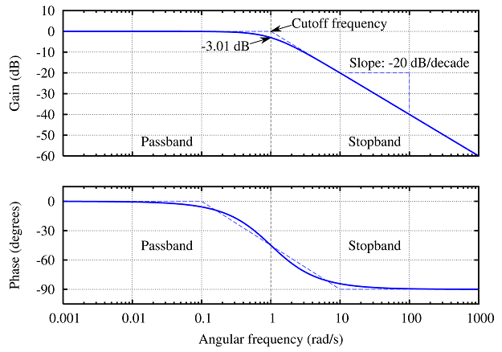
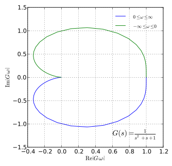

Frequency response analysis involves studying how a system reacts to sinusoidal inputs of varying frequencies. It is fundamental to understanding stability, filtering, and resonance behavior in control systems.
📉 Bode Plots
Magnitude Plot: Shows gain (in dB) vs. frequency (log scale).
Phase Plot: Shows phase shift (in degrees) vs. frequency.

Fig: Bode plot of a typical second-order system.
🌀 Resonance & Bandwidth
Resonant Frequency (ωr): Frequency where gain is maximum.
Bandwidth: Range of frequencies with gain > -3 dB of peak value.
🔍 Gain Margin & Phase Margin
Gain Margin (GM): How much gain can increase before instability.
Phase Margin (PM): Additional phase lag before instability.
Gain and phase margins are key to analyzing and ensuring system stability from Bode plots.
🎛️ Nyquist Plot
A plot of the open-loop frequency response on the complex plane, used with Nyquist stability criterion.

Fig: Nyquist plot for a stable second-order system.
🧠 Example
System:G(s) = 10 / (s(s+2))
Magnitude plot starts at -20 dB/dec at ω = 1 rad/s
Phase lag accumulates to -180° as ω increases
Apply margins using intersection with -180° axis (Nyquist) or -3 dB point (Bode)